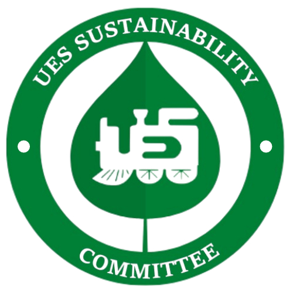

About Us

The UES Sustainability Committee is a group of undergraduate students in the Faculty of Engineering that operates under the Undergraduate Engineering Society (UES). The goal of the committee is to run initiatives that educate engineering students and promote sustainability in their daily lives and professional careers. This committee also works to provide all UES activities with guidelines for being sustainable, audit all UES activities’ environmental footprint, and suggest improvements for the following year. If you are interested in attending our events, checking out our resources, or contacting us, you can find us through our instagram @ues.sustainability or email us at ues.sustainability@gmail.com
Events
**To be updated throughout the year
Sustainability at Western
Western Sustainability Leaders Program
This program allows you to increase your sustainability knowledge through monthly webinars! Grow your network by engaging with other like minded students from all Faculties at Western!
To sign up email sustainability@uwo.ca with your name, email, program, and year of study!
To find out more about the program, click here.
To view last years recorded webinars, click here.
Sustainability Tips
Trying to become more sustainable on a personal level can be a very daunting task in our society. However, there are many things we can do individually that are proven to be an effective way to reduce waste and GHG emissions. Listed below are arguably the four most important and easiest to implement personal changes you can make to push for a more sustainable future.
Diet
There is much debate on what lifestyle change has the greatest impact on the environment. Diet is arguably
the
best as it is proven that humans can live off a whole food plant based diet. Here are some environmental
facts
that go along with this:
As you can see, one does not have to go 100% vegan to reduce their environmental impact. Solely cutting out
red
meat reduces your diet emissions by 25%. These numbers are also paired with numerous social (food industry
working conditions and animal cruelty) and health benefits. Try cutting out one thing at a time and see how
much
better you feel!
It takes around 2000 litres of water to produce one beef patty
Oat Milk produces 3 times less CO2 emissions, uses 22 times less water, and requires 80% less land
than
regular
milk.
The average American diet equates to 2.5 tonnes CO2e, versus a
vegetarian
diet of 1.7 tonnes CO2e, that is 33%
less emissions!
Approximately 15% of global emissions result directly from livestock
Bycatch (unintentional catch during commercial fishing) results in approximately 300,000 deaths per
year,
majority being; dolphins, whales, and sea turtles
Politics
While personal impacts do make a difference, changing policies has the biggest influence for change
on the
municipal, national, and international scale. It is important that we use our democratic rights in Canada to
elect leaders that are truthful and passionate in building a more equitable and sustainable future for
generations to come. Around election time do your deep research, know which candidates stand for what and
who
you think is most likely to act upon their promises.
After elections keep in touch with your Member of Parliament (MP) to ensure that they are acting in your
best
interest for a more sustainable future. Voice your concerns, voice your actions, voice your solutions. MP’s
represent you in the House of Commons and are usually receptive to hearing citizens' concerns and
acting on
them. Emails of MP’s can be easily found here.
Reduction
“The most sustainable purchase is the one you never made.”
Our “fast fashion” and “quick fix” society entices us to buy products that might have not actually been necessary to buy. While reusing and recycling are beneficial ways to reduce waste, only buying things we need is the most sustainable way to live. As a rule of thumb, one should consider this: only buy a product if you know you will use it over 30 times or if it would be beneficial in an emergency.
Many purchases, especially clothing, are impulsive on how we are feeling in the moment. Remember to take a step back and think practicality about the item being purchased before you tap your credit card.
Our “fast fashion” and “quick fix” society entices us to buy products that might have not actually been necessary to buy. While reusing and recycling are beneficial ways to reduce waste, only buying things we need is the most sustainable way to live. As a rule of thumb, one should consider this: only buy a product if you know you will use it over 30 times or if it would be beneficial in an emergency.
Many purchases, especially clothing, are impulsive on how we are feeling in the moment. Remember to take a step back and think practicality about the item being purchased before you tap your credit card.
Water Hacks
With the global temperature rising, water is to be the most contested commodity in the world. Water in
Canada is
taken for granted due to our immense supply of fresh water. However, many decisions we make have a large
impact
on water usage that we do not think of, here are a few:
It takes an average of 10,000 litres of water to make a new pair of jeans Per 100g serving, tofu requires approximately 6 times less water to produce than beef The average shower head uses approximately 15 litres/min On average, using a (newer) dishwasher saves more water compared to washing by hand.
On top of these facts, heating water takes a great amount of energy and therefore releases GHG emissions. Washing your clothes in cold water uses approximately 90% less energy, and most laundry detergents now are designed to work well in cold water! (i.e Tru Earth Strips)
Try something new every month, whether that’s trying to cut your shower down a few minutes or thrifting your next set of clothes. Find what works for you, sustainability is a process, enjoy the journey!
It takes an average of 10,000 litres of water to make a new pair of jeans Per 100g serving, tofu requires approximately 6 times less water to produce than beef The average shower head uses approximately 15 litres/min On average, using a (newer) dishwasher saves more water compared to washing by hand.
On top of these facts, heating water takes a great amount of energy and therefore releases GHG emissions. Washing your clothes in cold water uses approximately 90% less energy, and most laundry detergents now are designed to work well in cold water! (i.e Tru Earth Strips)
Try something new every month, whether that’s trying to cut your shower down a few minutes or thrifting your next set of clothes. Find what works for you, sustainability is a process, enjoy the journey!